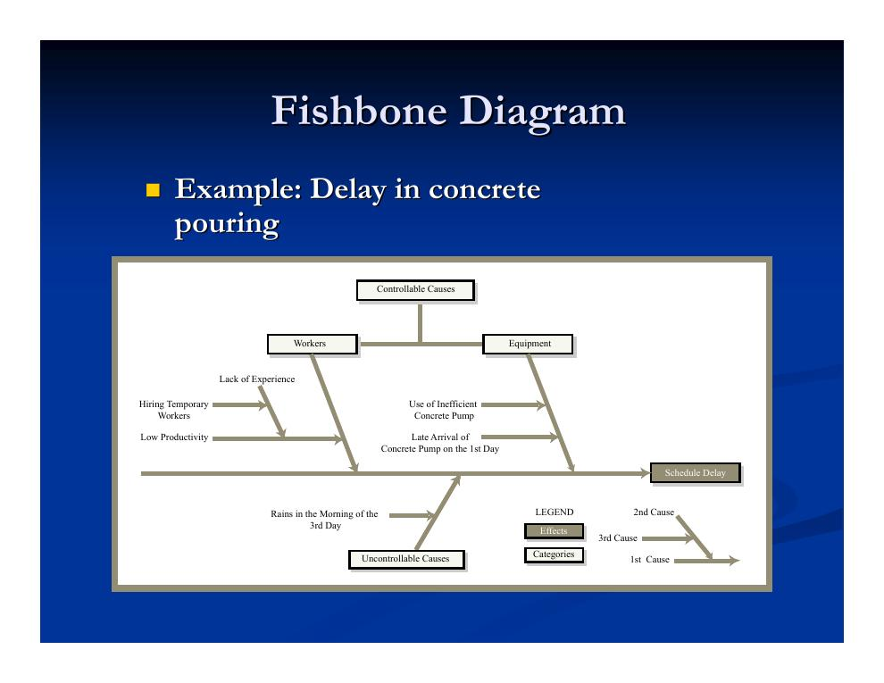
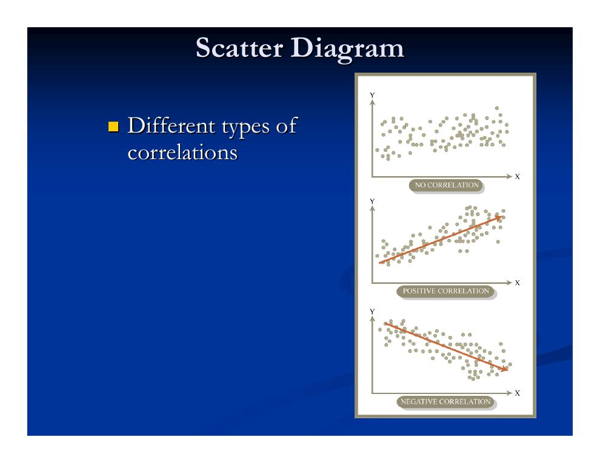
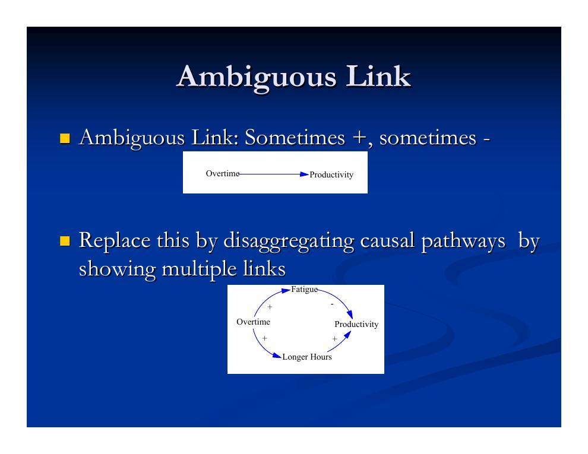
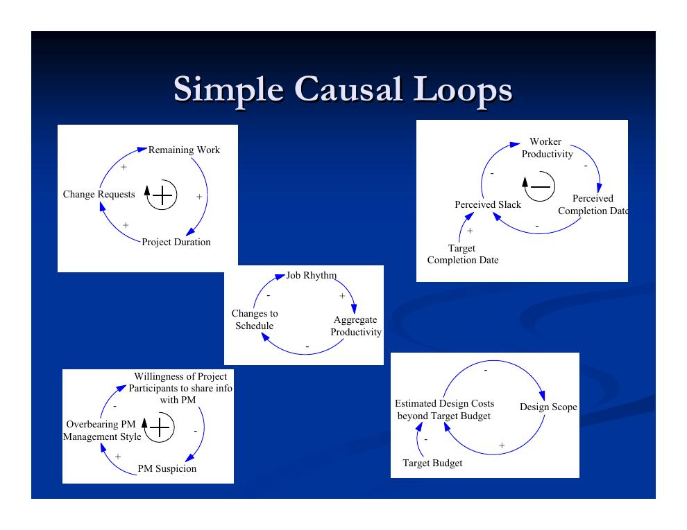
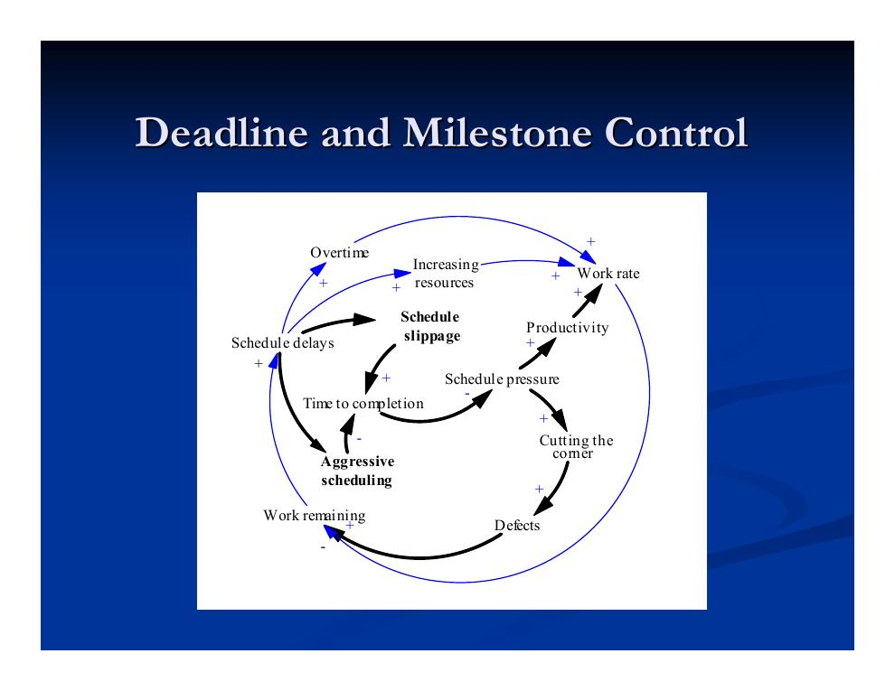
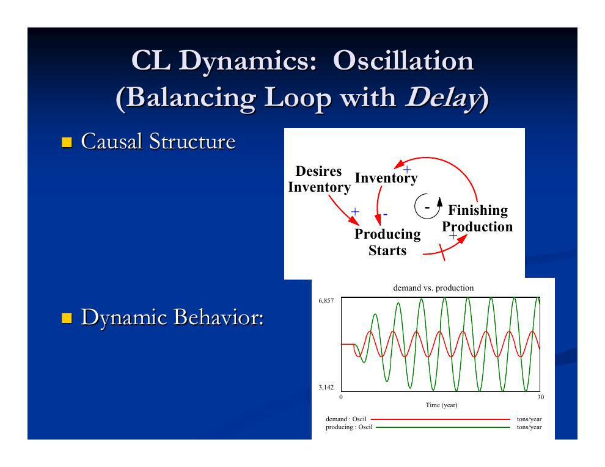
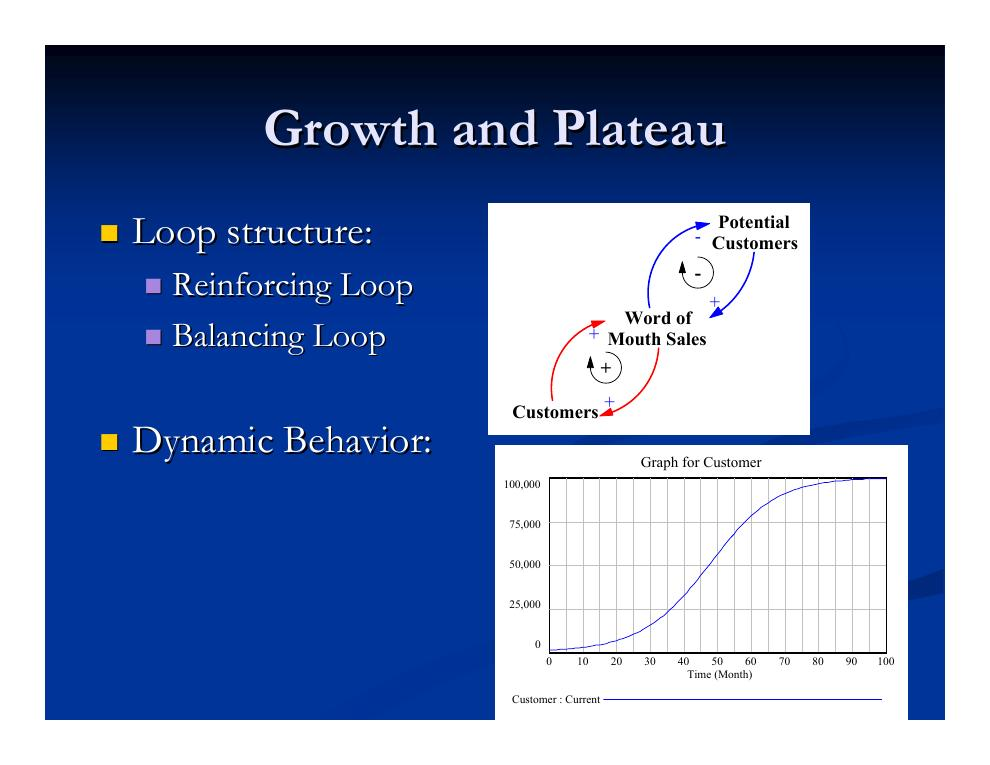
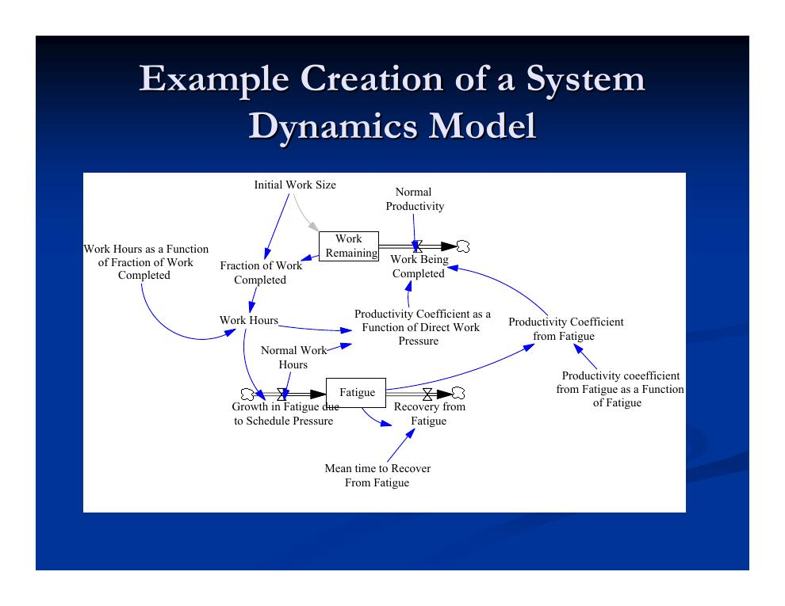

- Werkzeuge der Problemdiagnose
- Pareto-Analyse
- Ursache-Wirkungs-Diagramm (Fishbone)
- Streudiagramm: Korrelation ist nicht Kausalität
- Systemdenken im Projektmanagement
- Kausaldiagramme: Wirkungslinks und Polarität
- Feedback-Loops und ihr dynamisches Verhalten
- System Dynamics: Vom Kausaldiagramm zum Simulationsmodell
Werkzeuge der Problemdiagnose
Die Projektsteuerung (vgl. Kapitel 5.2) beginnt mit der Problemdiagnose: Bevor gegengesteuert werden kann, müssen die Ursachen eines Leistungsproblems verstanden sein. Neben der bereits behandelten explorativen Auswertung (Exploratory Analysis, vgl. Kapitel 5.1) stellt die Vorlesung vier Diagnosewerkzeuge vor, die sich in Fokus und Ausdruckskraft unterscheiden:
- Pareto-Analyse – welche wenigen Komponenten verursachen den Großteil des Problems?
- Ursache-Wirkungs-Diagramm (Fishbone-Diagramm) – welche Ursachen wirken in welchen Kategorien auf das Problem?
- Streudiagramm – wie hängen zwei Größen statistisch zusammen?
- Kausaldiagramm (Causal Loop Diagram) – welche Wirkungsketten und Rückkopplungen erzeugen das Verhalten?
Pareto-Analyse
Der Grundgedanke der Pareto-Analyse: Wer einen kleinen Teil der Projektkomponenten richtig adressiert, gewinnt damit Kontrolle über den Rest. Sie hilft, die Haupttreiber einer bestimmten Leistungsdimension zu identifizieren – meist der Kosten- oder Qualitätsleistung. Dazu werden die Komponenten in drei Gruppen eingeteilt:
- Gruppe A
- Ein kleiner Teil der großen Kostenkomponenten, der einen erheblichen Anteil der Gesamtkosten ausmacht.
- Gruppe B
- Alle Kostenkomponenten, die weder zu Gruppe A noch zu Gruppe C gehören.
- Gruppe C
- Ein großer Teil der kleinen Kostenkomponenten, der zusammen nur einen unbedeutenden Anteil der Gesamtkosten ausmacht.
Beispiel aus dem Hochbau – Treiber von Qualitätsproblemen, nach Häufigkeit sortiert ergibt sich das typische Pareto-Bild: Wenige Gewerke stehen für die meisten Vorkommnisse.
| Arbeitskräfte | Häufigkeit der Qualitätsprobleme |
|---|---|
| Zimmerer/Schaler (Carpenters) | 20 |
| Betonbauer (Concrete workers) | 15 |
| Bewehrungsbauer (Rebar workers) | 10 |
| Maurer/Mörtelarbeiten (Mortar workers) | 5 |
Ursache-Wirkungs-Diagramm (Fishbone)
Das Fishbone-Diagramm („Fischgräten-“ bzw. Ursache-Wirkungs-Diagramm, auch Ishikawa-Diagramm) hilft, die Treiber eines Leistungsproblems zu identifizieren, indem es Ursache-Wirkungs-Beziehungen in einem leicht verständlichen Format darstellt. Vorgehen: Zuerst wird das Problem definiert; dann werden mögliche Ursachen in vorab festgelegte, projektspezifische Kategorien eingeordnet. Unterursachen erscheinen als zunehmend verfeinerte Verästelungen.

Streudiagramm: Korrelation ist nicht Kausalität
Das Streudiagramm (Scatter Diagram) hilft, den Trend der künftigen Leistung abzuschätzen, indem es die Korrelation zwischen Variablen sichtbar macht. Der Datensatz besteht aus einer unabhängigen Variablen (horizontale Achse) und einer abhängigen Variablen (vertikale Achse); die Punktwolke zeigt den Zusammenhang.

Systemdenken im Projektmanagement
Systemdenken (Systems Thinking) bedeutet, Probleme in einem breiteren Kontext zu begreifen: Es betont die Wechselwirkungen statt reduktionistischer Einzelbetrachtung, richtet den Blick auf interne statt externe Faktoren und betrachtet die Rückkopplungsstruktur des Systems als Hauptursache seines Verhaltens. Es tritt in zwei Ausprägungen auf: qualitativ als Kausaldiagramme, quantitativ als System Dynamics.
Die Hauptkritik des Systemdenkens an den traditionellen Methoden des Projektmanagements: Sie sind zu
- fragmentiert,
- restriktiv in ihren Annahmen,
- lokal in der Betrachtung von Änderungsfolgen,
- zögerlich bei der Abbildung „weicher“ Faktoren,
- darauf angewiesen, dass Menschen die Teilmodelle verknüpfen,
- bereit, wichtige „Nebenwirkungen“ zu ignorieren.
Zugleich gilt Systemdenken als potenziell großer Beitrag zum Projektlernen (das Modell speichert institutionelles Wissen), zur Planung (robuste Entscheidungsregeln und Hebelpunkte identifizieren) und zur Steuerung (wie geht man am besten mit Abweichungen um?).
Die Kritik der Fragmentierung im Detail: Traditionelle diskrete Methoden – CPM, Ressourcenalgorithmen, Zeit-Kosten-Ausgleich, Produktivitätsbetrachtungen mit manueller Gesamtprüfung – analysieren Vorgänge isoliert (lokale Wirkung einer Verzögerung oder Verlängerung). Tatsächlich sind Produktivität, Ressourceneinsatz, Qualität und Kosten eng verkoppelt: Die Verzögerung eines Vorgangs zieht Personal von anderen Vorgängen ab und lässt anderes leerlaufen, kann Kundenbeziehungen und Personalzuteilung beeinträchtigen, macht Überstunden und Parallelarbeit wahrscheinlicher (und senkt damit die Qualität) und erfordert die Neubetrachtung von Nachunternehmern und Materialbeschaffung. Typische Terminplaner denken diese Implikationen nicht vollständig durch – und der Plan ändert sich ohnehin laufend.
Kausaldiagramme: Wirkungslinks und Polarität
Das Kausaldiagramm (Causal Loop Diagram, CLD) konzentriert sich wie das Fishbone-Diagramm auf Kausalität – im Kontrast zum korrelationsorientierten Streudiagramm –, ist aber allgemeiner und ausdrucksstärker: Es darf Zyklen enthalten und damit Rückkopplungseffekte erfassen, und jeder Wirkungspfeil trägt ein Vorzeichen (+ oder −), die sogenannte Polarität:
- Positiver Wirkungspfeil (+)
- „Unter sonst gleichen Bedingungen hebt (senkt) eine Zunahme (Abnahme) der ersten Variablen die zweite Variable über (unter) den Wert, den sie sonst gehabt hätte.“
- Negativer Wirkungspfeil (−)
- „Unter sonst gleichen Bedingungen senkt (hebt) eine Zunahme (Abnahme) der ersten Variablen die zweite Variable unter (über) den Wert, den sie sonst gehabt hätte.“
Bei der Polarität von Links in längeren Wirkungsketten kann man sich leicht vertun. Zwei Faustregeln für den Link X → Y:
- Den Link isoliert betrachten – Links vor X oder nach Y ausblenden.
- Fragen: „Wenn X stiege – würde Y steigen oder fallen?“ Steigt Y, ist die Polarität „+“; fällt Y, ist sie „−“.
Ist die Antwort unklar oder hängt sie vom Wert von X ab, sollten mehrere Wirkungspfade zwischen X und Y getrennt dargestellt werden – der Link ist mehrdeutig:

Feedback-Loops und ihr dynamisches Verhalten
Schleifen (Loops) in einem Kausaldiagramm zeigen Rückkopplung im dargestellten System an: Eine Änderung stößt eine Kette weiterer Änderungen an, die die ursprüngliche Änderung entweder verstärken oder dämpfen. Die Klassifikation erfolgt über das Produkt der Vorzeichen entlang der Schleife:
- Verstärkende Schleife (Reinforcing Loop)
- Produkt der Vorzeichen positiv – die Änderung schaukelt sich auf.
- Ausgleichende Schleife (Balancing Loop)
- Produkt der Vorzeichen negativ – die Änderung wird gedämpft, das System strebt einem Ziel zu.

Wie mächtig – und tückisch – solche Rückkopplungen im Projektalltag sind, zeigt das Beispiel der Termin- und Meilensteinsteuerung: Terminverzug löst Gegenmaßnahmen aus, die ihrerseits neue Probleme erzeugen.

Jede Schleife eines Kausaldiagramms ist mit einem qualitativen dynamischen Verhalten verbunden. Die häufigsten Verhaltensmodi einzelner Schleifen:
- Exponentielles Wachstum – verstärkende Schleife erster Ordnung: z. B. Kunden → Mundpropaganda („Word of Mouth Sales“) → noch mehr Kunden; die Bestandskurve wächst exponentiell.
- Zielannäherung (Goal Seeking) – ausgleichende Schleife: Der Bestand nähert sich asymptotisch einem Zielwert, z. B. weil der Vorrat potenzieller Kunden („Potential Customers“) schrumpft.
- Oszillation – ausgleichende Schleife mit Verzögerung: Das System schießt wiederholt über das Ziel hinaus (Abb. 6).

Setzt man mehrere Schleifen zusammen, mischen sich die Verhaltensmodi – das klassische Beispiel ist Wachstum mit Plateau:

Ein baunahes Beispiel für gekoppelte Schleifen liefert das Fast-Tracking (Überlappung von Planung und Ausführung): Frühe Fertigstellungsziele führen zu unvollständigem Leistungsumfang und zu Überlappung von Planung und Bau; unfertige Planung provoziert Änderungswünsche von Bauherr und Ausführenden, Termindruck senkt die Planungsvollständigkeit weiter – Änderungen und Verzug verstärken sich gegenseitig. Diese Dynamik wird in Kapitel 5.4 vertieft.
System Dynamics: Vom Kausaldiagramm zum Simulationsmodell
Für die quantitative Systemanalyse von Projekten gibt es mehrere Rahmenwerke – etwa ereignisorientierte Simulation (Discrete Event Simulation) und agentenbasierte Simulation. Am weitesten verbreitet ist System Dynamics (SD). Seinen größten Vorteil spielt SD in Systemen aus, die nichtlinear und rückkopplungsreich sind, Verzögerungen aufweisen und wenig von kleinteiliger Heterogenität bestimmt werden.
- System Dynamics
- Stellt das System als gekoppeltes Gleichungssystem gewöhnlicher Differentialgleichungen (ODEs) dar – in Standard-Zustandsraumform und mit kontinuierlicher Zeit; stochastische Komponenten sind (mit Sonderbehandlung) zulässig. Analytische Lösungen sind nicht möglich, es wird numerisch integriert. Die grafische Darstellung dient dem Problemfokus: Zustandsgrößen als Bestände (Stocks), die Komponenten ihrer Ableitungen als Flüsse (Flows), Zwischenrechnungen als Hilfsgrößen (Auxiliaries) und Tabellenfunktionen.
Ein SD-Modell entsteht in mehreren Schritten:
- Das System mit einem Kausaldiagramm konzipieren.
- Das Kausaldiagramm in eine Stock-and-Flow-Struktur übersetzen: Zustandsgrößen (Akkumulationen) werden Bestände, ihre Änderungen werden Flüsse – jede Zustandsänderung läuft über Flüsse, und jede Schleife enthält mindestens einen Bestand; Zwischenrechnungen und Ausgaben werden Hilfsgrößen.
- Gleichungen ergänzen, die die Beziehungen zwischen den Variablen erfassen.
- Das Modell an historischen Daten kalibrieren.
- Szenarien rechnen, um Wirkungen zu erkennen und robuste Politiken zu identifizieren.
Die Vorlesung führt das an zwei Beispielen vor. Erstens am Kundenwachstum: Aus der Schleife in Abb. 7 werden die Bestände „Potential Customers“ und „Customers“ mit dem Fluss „New Customers“ dazwischen; Hilfsgrößen wie Gesamtbevölkerung, Kundenanteil und Beitrittswahrscheinlichkeit sowie Gleichungen (z. B. Gesamtbevölkerung = Kunden + potenzielle Kunden) vervollständigen das Modell. Zweitens am Zusammenspiel von Arbeitsdruck, Ermüdung und Produktivität:
